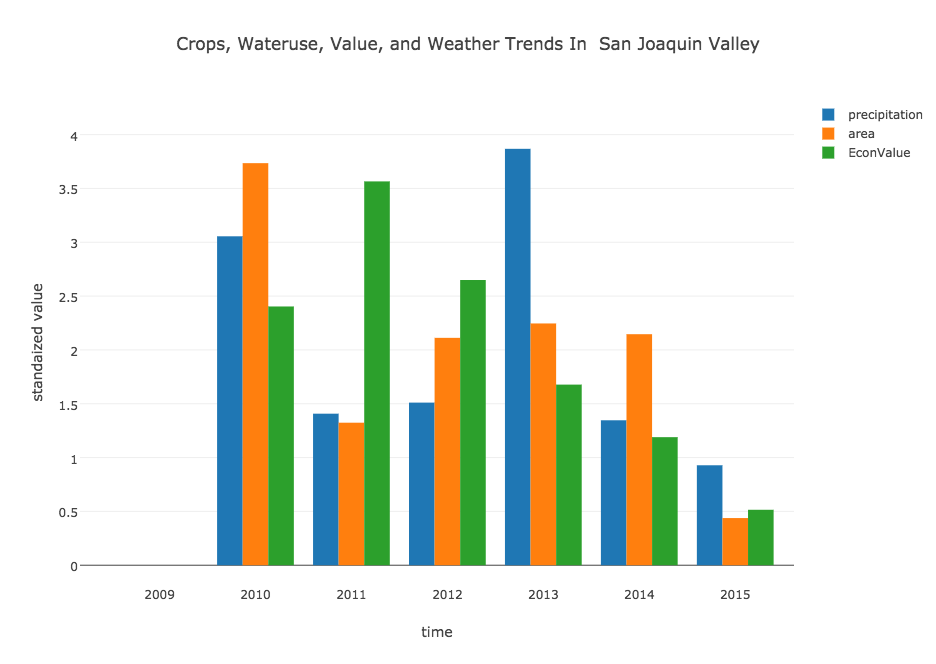
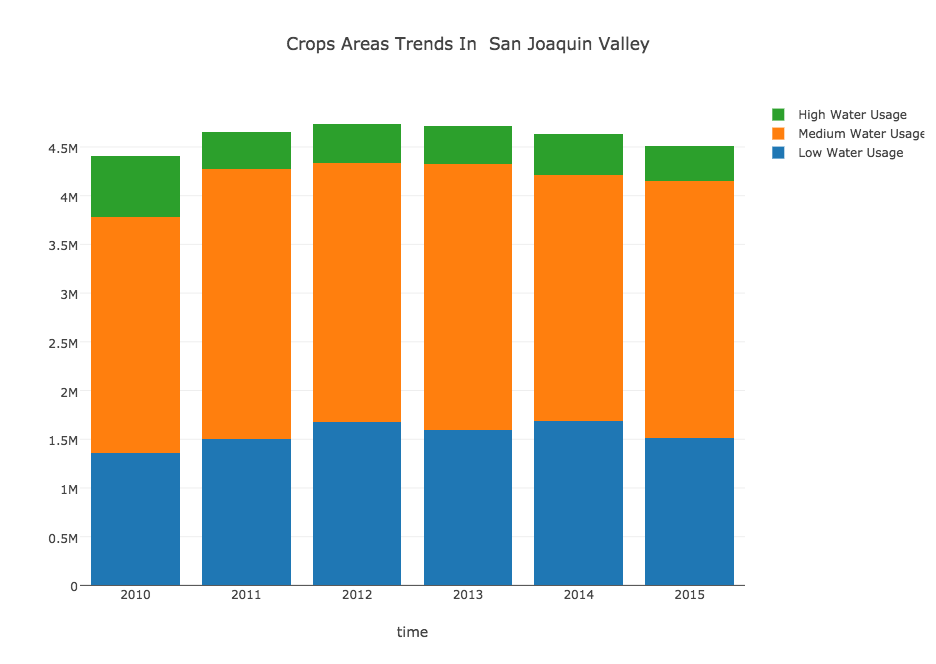
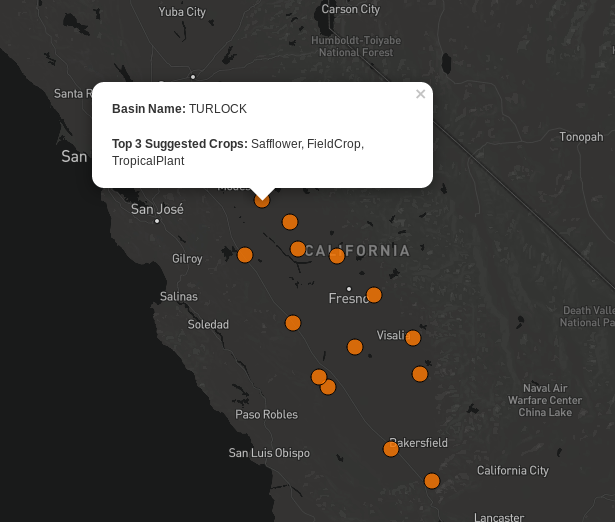

Crop Selection in San Joaquin Valley

Our topic is to analysis water uses of crops in San Joaquin Valley, California. Droughts have stocked California for the past 6 years and it has been eased a little bit due to recent rain. However, the severe effect from drought is still influencing California. Last Month, NASA published a report about lands in San Joaquin Valley are sinking into the ground. Some areas sunk for more than a feet in a year. It is caused by the fact that too much ground water has been drawn from the ground and most of those water goes into agriculture.
In the main time, about 13% of US agriculture production came from San Joaquin Valley. It is a challenge to find the balance between reducing water uses in agriculture and keeping the production of crops going. Here we investigate the appropriate crops to grow and the trends of changing in crops areas in the past 6 years. Ideally, we want to help farmers make decisions on what to grow, and help the government to get ideas of current water usage in agriculture in San Joaquin Valley.
Data Cleaning and Munging Before Analysis
 We had our data from 5 resources, and we merged by common features across tables. For tables that don’t have common features, we create features which can be used to merge the other tables. For example, in the Cropland Data Layer(CDL) excel, we created county name based on the locations of subbasins so that this table can be merged with Water Usage for crops by county. The highlighted feature in the table below are the common features. We also web-scrape precipitation store in API format from the Internet and manually summarized crops’ economic value from reading pdfs from the website. Here are lists of our data sources
We had our data from 5 resources, and we merged by common features across tables. For tables that don’t have common features, we create features which can be used to merge the other tables. For example, in the Cropland Data Layer(CDL) excel, we created county name based on the locations of subbasins so that this table can be merged with Water Usage for crops by county. The highlighted feature in the table below are the common features. We also web-scrape precipitation store in API format from the Internet and manually summarized crops’ economic value from reading pdfs from the website. Here are lists of our data sources
- Basin Information The UC Davis Water and Energy Efficiency Center Processed this data into Excel Format. Contact us if you want to download the file
- Agriculture Water Usage By County
- Basin Shapefile
- Zipcode and Precipetation
- Crop Economic Value
- Other Useful Information on Subbasin
- Data Ready For Analysis
- Link to our iPython Notebook in Preprocesing Data
Data Analysis/Visulization

This is a bar plot showing the trend for crop area, precipitation and crop economic value from 2010 to 2015. We standardized the value of area, economic value and precipitation and put them into a same bar plot graph. We can see that precipitation of San Joaquin valley dropped significantly since 2011 except year 2013. The crops area trends is consistent with precipitation and the crops area reaches its minimal in 2015. This fact proves that agriculture production is severely affected by the lack of rains. In the main time, the economic value of crops reaches its maximum in 2011 and starts to drop each year afterwards, and reaches the minimal value in 2015. Overall, we can see that agriculture production is severely affected by the lack of rains, and experiences an decrease in production from economics aspect. Here is the interactive plot

In this graph, we separate the crops by three tiers according to it`s water usage. Top 10% of crops in terms of water usage are named after high water usage crop. Bottom 40% of crops in terms of water usage are called low water usage crops. The rest is called medium water usage crops. We can see that the Area of High water usage crops have decreased dramatically since 2010. The area of low water usage crops has increased by a comparably smaller amount since 2010. Medium water usage crops kept relatively constant. It shows that farmer has been trying to grow more low water usage crops and less high water usage crops. Here is the interactive plot
We plot the trends of area that grows Alfalfa Grain and corn. Those plants have High water consumption plants but low economic values, but are widely grows in San Joaquin Valley. Note that Alfalfa is used for grazing, hay, and silage. It has a low economics value but very high water consumptions. In the graph of Alfalfa trends, we can see that the area of Alfalfa has dropped significantly, but are still growing in many counties. Similar trends happened for both Grain and corn. It will be a great idea that if California can import Alfalfa Grain and corn or find their substitutes to save water. Corn_Alfalfa_Grain_Trends
 According to the water appropriateness levels, in each Subbasin, we pick the top 50% crops (approx 7 crops) in terms of best water appropriateness. Among these top water saving crops, we then rank them by production economics value, and project the top 3 economic crops for each subbasin.According to the criteria, for example, we suggest farmer from Turlock to grow safflower, field crop, and tropical plant. Simply click on a data point(subbasin location) on this interactive map, you will sse the suggested crop to grow in each sub basin in San Joaquin Valley.
- MaJun’s map Link to iPython Notebook on Data Analysis/Visulization
- Plot1-5
- Plot6-7